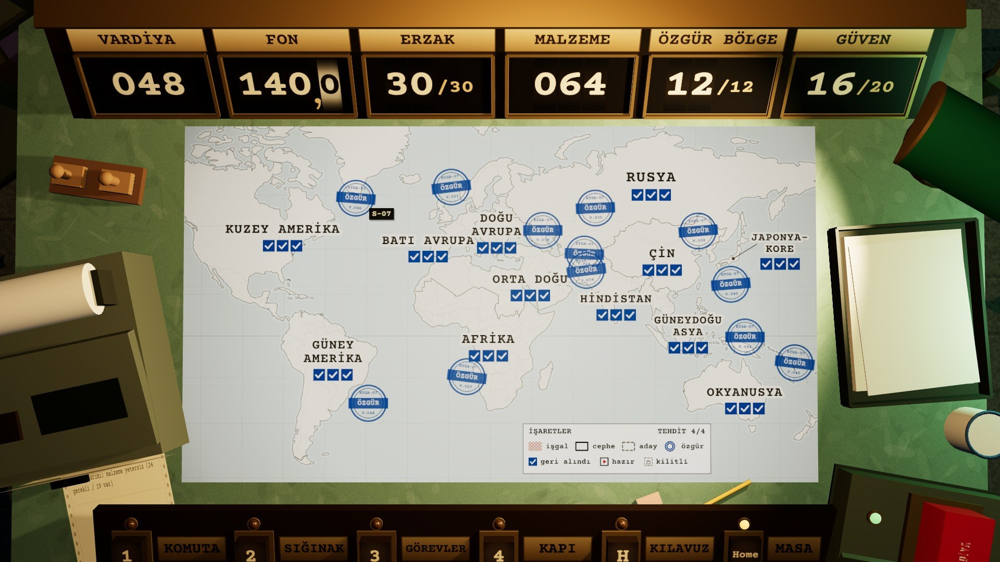

KYGA · HAREKÂT SONU RAPORU
SIĞINAK 07 · V.048 · tek nüsha
KAZANILDI
On iki bölgenin hepsi özgür. YZ'nin son sunucusu 48. vardiyada düştü.
AĞA BAĞLANMA · ANALOG KAL
SÜRE
48
vardiya
BASKIN
44
39 başarılı · 5 başarısız
ÖZGÜR BÖLGE
12/12
36/36 sektör geri alındı
SIĞINAK NÜFUSU
14
kişi
İŞGAL ORANI
VARDİYA 1–48
%100
%50
%0
1
5
10
15
20
25
30
35
40
45
48
İŞGAL
GERİ ALINAN
1
2
3
4
5
KIRILMA ANLARI
1
V.011
Batı Avrupa özgür, ilk bölge
2
V.015
YZ karşı saldırısı: Doğu Avrupa 01 yeniden işgal
3
V.021
Doğu Avrupa özgür
4
V.039
YZ karşı saldırısı: Çin 02 yeniden işgal
5
V.048
Okyanusya özgür, son sunucu düştü
Enter
YENİDEN BAŞLA